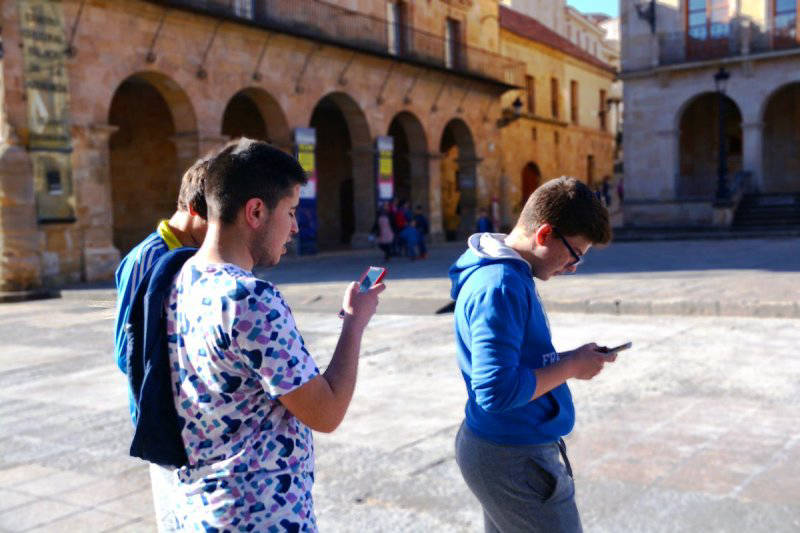
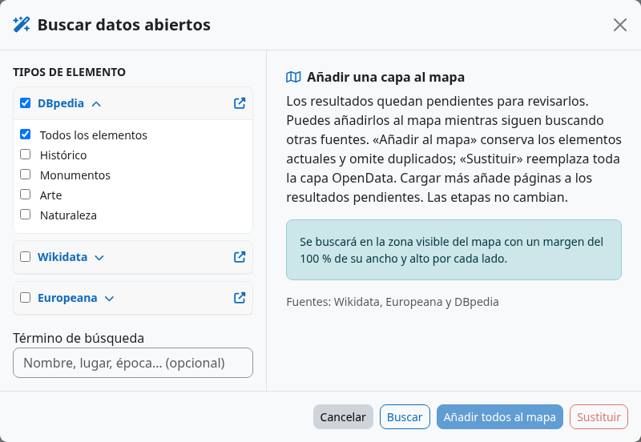
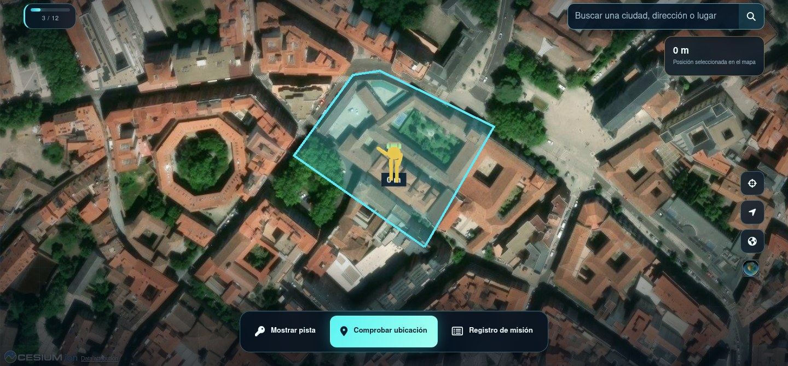

Crea una caza
Diseña caminos, etapas y pistas desde el curso.
Crea aventuras al aire libre, en interiores o sobre un mapa virtual en Moodle. Diseña caminos, escribe pistas, descubre lugares con GPS o QR y sigue el progreso de los equipos.
Treasure Hunt es una actividad Moodle para aprender explorando. El profesorado diseña caminos y etapas; el alumnado encuentra lugares, responde preguntas y avanza en un mapa real o virtual.
Usa GPS al aire libre, marca posiciones desde un escritorio o escanea QR cuando la localización sea difícil.
Las pistas, preguntas opcionales y restricciones de actividades Moodle conectan el descubrimiento con el curso.
Juega individualmente o por equipos, elige la calificación y revisa el progreso desde el panel docente.

Crea caminos y etapas en el editor geográfico, dibuja zonas o puntos, establece reglas de descubrimiento y prueba cada camino antes de abrirlo al alumnado.
El asistente OpenData busca registros públicos georreferenciados en la zona visible del mapa. Explora categorías y proveedores, consulta descripciones, imágenes y enlaces, y añade hallazgos a una capa local. Un lugar interesante puede convertirse en etapa con información editable.
Busca en Wikidata y DBpedia; Europeana está disponible cuando se configura su clave API.
Tutorial de OpenData →
Vuela entre lugares, explora el relieve y sigue a un Pegman 3D animado. El visor Cessium / Cesium 3D es una alternativa experimental al visor estándar. Mapbox es otro visor de mapas experimental opcional.
Comparar visores →
Sigue el proceso paso a paso y comparte la guía de estudiantes antes de la primera caza.
Instala la actividad Moodle, crea un camino y pruébalo en vista previa docente. El alumnado podrá jugar desde el navegador sin instalar otra aplicación nativa.
Guía de instalación →